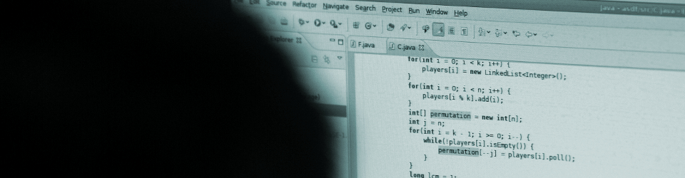
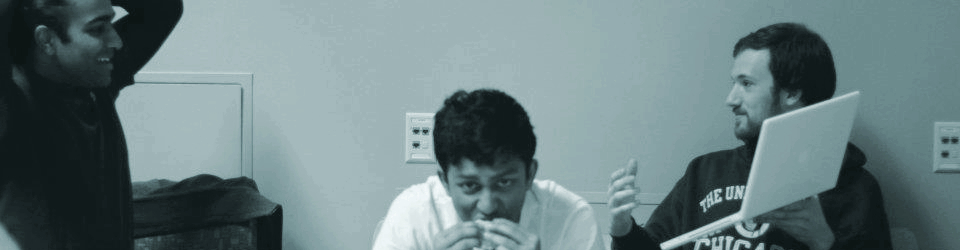
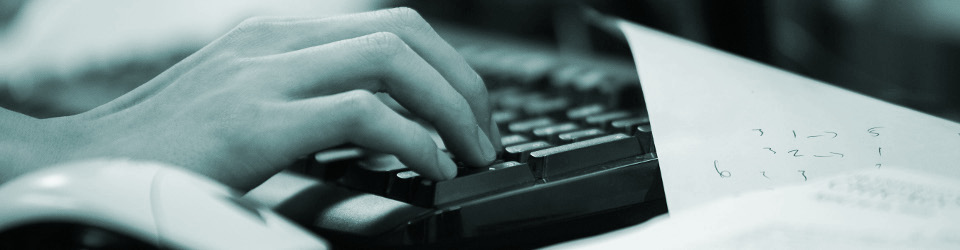
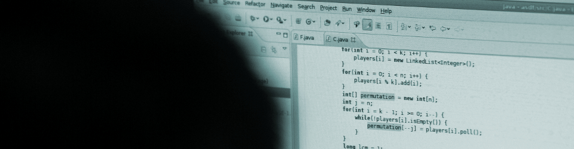
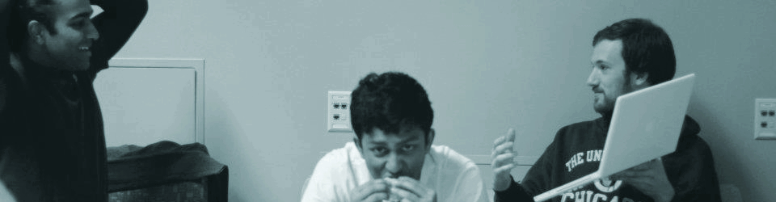
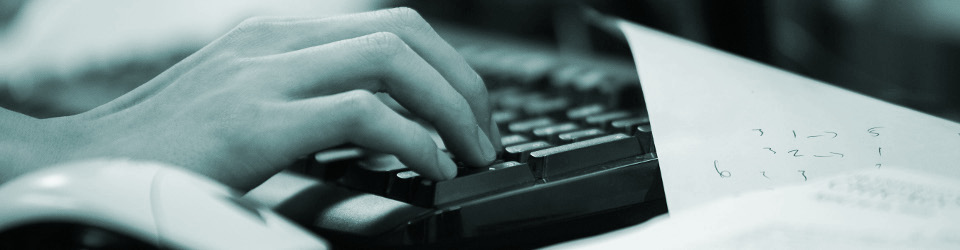
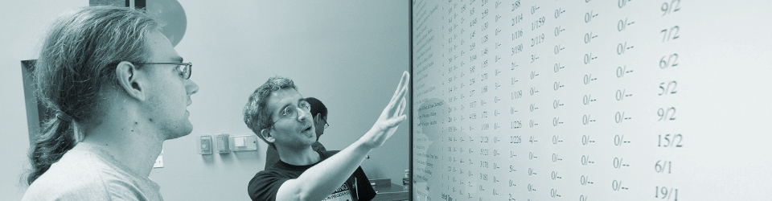
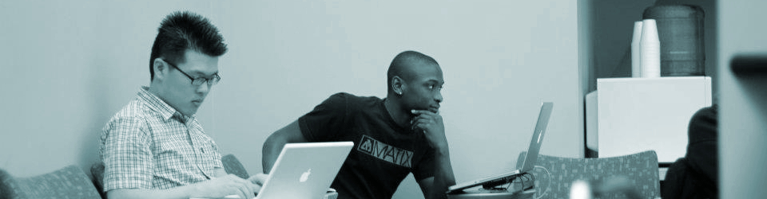
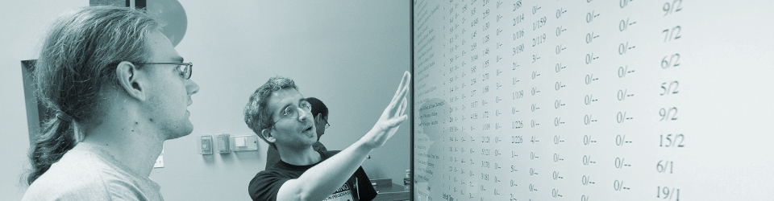
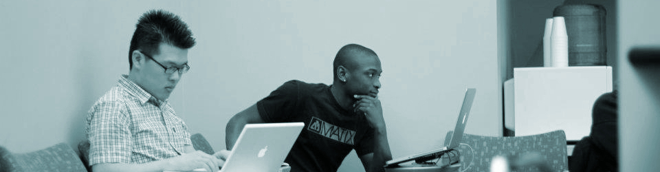

 





What is the Student Activities Committee?
The Computer Science Student Activities Committee is a committee in the Department of Computer Science composed of undergraduate, masters, and PhD students with the following two objectives:
-
Student Events. The committee facilitates and promotes the organization of events that are of interest to technical students on campus (including, but not limited to, students in the Department of Computer Science).
The Student Activities Committee's main role is to act as the main "point of contact" for (1) external speakers interested in speaking to technical students, and (2) companies interested in connecting with technical students (including for recruitment purposes). Proposals for events are submitted to the committee and are then typically passed on to one of the two technology-oriented Recognized Student Organizations on campus: hack@uchicago and the ACM Student Chapter.
If you are interested in holding an event on campus, please see our Holding an Event on Campus page.
-
Fundraising. The committee actively seeks out donations from companies, alumni, and other individuals to fund the committee's activities. These fund are used for specific events and also for the purchase of hardware and other capital improvements that benefit technical students on campus, such as Arduinos, Raspberri Pi's, tools, etc.
If you are interested in donating to the Computer Science Student Activities Fund, including sponsoring student events on campus, please see the Donate to the Student Activities Fund page. A list of corporate and alumni donors can be found in the Donors page.
Current Committee Members
The committee is currently formed by:
- TBD
- TBD
- TBD